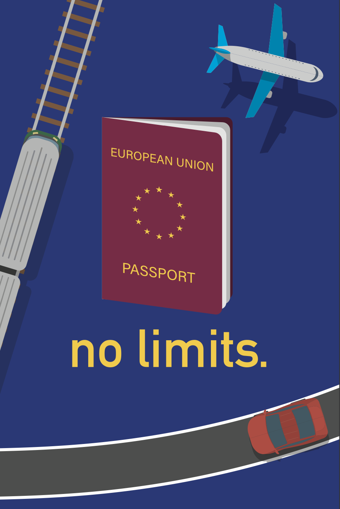

hey, i’m honza
i help create brands.
most of my work is commercial. the main thought behind all my work is to try and not contribute to the plague of tasteless design everywhere you look. this thought came up when i was working on a presentation on visual smog a couple years ago. 🖍️
i often leave things to the last minute which i find yelds the best results, mistakes happen when you overthink. 💾 📎 link to my presentation
my work
⇣
branding for a niche dress maker Esti. 2019.
to attract the right customer, i decided it was best to go with a very minimal logo, which was very popular at the time.
⇣
branding for a czech movie production company. (wip)
bohemia motion pictures produces and distributes all kinds of movies, raging from kids movies to A24 art films with big budgets, so it was important for the logo to be applicable in both scenarios.

⇣
poster for slanted, a german graphic design magazine (2019). when i used to dabble with propaganda. it's very straight to the point.